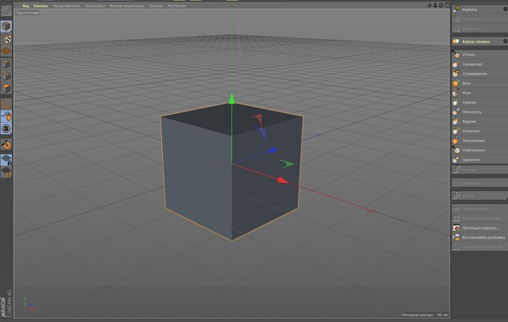
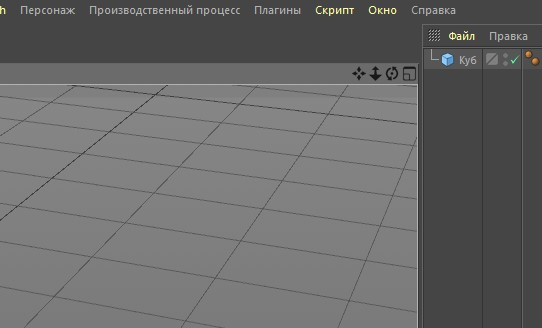
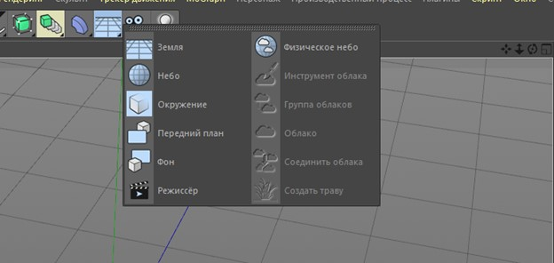
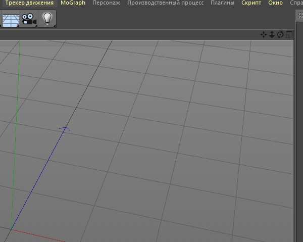

Знакомство с интерфейсом
И так перед вами меню программы которая состоит и нескольких элементов таких как:
1. главная панель инструментов – в ней много специальных атрибутов благодаря которым
можно создать фигуру и манипулировать ей.
2. окно обьектов – если говорить проще это окно в котором будут отображаться все текущие
объекты.
3. окно точной настройки сцены и текстуры модели.
4. собственно само окно вьюпорта, где будет ваша моделька в ней нет ничего кроме безграничного
(не совсем) пространства разделённого на полигоны, в нём вы и будете в основном работать.
5. специальная панель для точно манипуляции с полигонами обьекта, его центром, и привязки
вершин.
6. ползунок позволяющий управлять анимацией, взаимодействуя с ней вы можете заставить вашу
модель двигаться, менять форму, и тд.
7. панель создания материала - здесь можно создать текстуру для вашей модели и настроить её или
же накинуть уже готовую.
Так же справа над окном обьектов есть вкладка – здесь можно менять компоновку,
то есть конфигурацию интерфейса.
Например вкладка sculpt включит интерфейс скульптинга в котором будет удобно
тонко видоизменять вашу модель. 
На этом знакомство интерфейса пока что можно закончить. Остальные аспекты вы
узнаете в остальных разделах.
Навигация
Права сверху в окне вьюпорта есть кнопки позволяющие управлять сценой или
выбрать нужный ракурс для манипуляции с обьектом Слева направо: Движение по
осям, масштабирование, вращение, а вот последняя кнопка лишь частично относится
к навигации. Она позволяет работать с объектом лишь с одной стороны
Удобнее всего двигаться во вьюпорте будет с помощью горячих клавиш:
ALT + СКМ - движение по осям
ALT + ПКМ - масштабирование
ALT + ЛКМ – вращение
Основы моделирования
Чтобы добавить фигуру нужно зажать специальную вкладку на панели инструментов
и выбрать фигуру, которая вам нужна. Теперь коротко о каждой вкладке на панели
инструментов:
Вкладка сплайн
Это ряд инструментов которыми вы можете точками создавать индивидуальные
полигоны состоящие и нескольких точек. Так же сплайны применяются с некоторыми
эффекторами:
Вкладки эффекторов
Применяется исключительно со сплайнами. Благодаря этой вкладке можно быстро
создать простенькую лоу-поль модель и использовать её.
Теоретический функционал такой же как и у вкладки Subdivision surface только больше
возможностей. Так как инструменты в ней хоть и не применяются со сплайнами, зато
отлично применяются с любыми фигурами. Используется исключительно с двумя или
более обьектами.
Ещё одна вкладка эффекторов с таким же принципом с разницей лишь в том что её
эффекторы работают с полигонами.
Вкладка окружение 
С помощью этой вкладки можно добавить такие объекты как небо, фон. Вкладка исключительно
для работы со сценой. 
Далее идут вкладка камеры и освещения. Тут в общем всё понятно.
Раздел Sculpt
И так для работы с объектом в Разделе sculpt вам нужно перевести его в рабочее
состояние. Для этого на панели справа есть специальная кнопка
Отлично теперь вы можете работать с объектом. В какой то момент вы поймёте что
на объекте не хватает полигонов чтобы это исправить существует специальная клавиша
на панели справа
Данная кнопка разбивает обьект на полигоны делая модель более сглаженно и детализированной
На этом всё, поздравляю вы изучили основы работы в Cinema 4D.
Эта статья это лишь краткая теоретическая часть.
Чтобы узнать больше рекомендуем следующие видео:
Разобраться с основами
Если вы никогда раньше не работали с 3D, можно начать
с этого короткого урока: вы разберётесь в интерфейсе
и изучите основные настройки, которыми часто будете
пользоваться в дальнейшей работе.
Моделирование простых объектов
В этом видеоуроке показывают, как создать из полигонов
простую сцену: можете повторять за инструктором и постепенно
осваиваться в инструментах программы.
Моделирование сложных объектов
В этом видео рассказывается о методах ускорения и
оптимизации работы в Cinema 4D, особенно при работе
с большим количеством объектов физики (Rigid Body).
Узнайте, как легко и без лагов управлять тысячами таких
объектов во вьюпорте, как работать в тяжелых коллектах,
как быстро настраивать анимации и делать драфт. Как
оптимизировать свой или чужой проект.